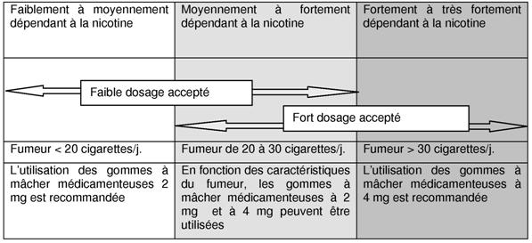

RÉSUMÉ DES CARACTÉRISTIQUES DU PRODUIT
ANSM - Mis à jour le : 21/08/2012
NICOTINELL REGLISSE 4 mg SANS SUCRE, gomme à mâcher médicamenteuse
2. COMPOSITION QUALITATIVE ET QUANTITATIVE
Nicotine ......................................................................................................................................... 4,00 mg
Sous forme de nicotine-polacriline (1:4) ......................................................................................... 20,00 mg
Pour une gomme à mâcher médicamenteuse.
Excipients : sorbitol, sodium et butylhydroxytoluène (E321).
Pour la liste complète des excipients, voir rubrique 6.1.
Gomme à mâcher médicamenteuse.
Gomme blanche de forme rectangulaire.
4.1. Indications thérapeutiques
Ce médicament est indiqué dans le traitement de la dépendance tabagique afin de soulager les symptômes du sevrage nicotinique chez les sujets désireux d'arrêter leur consommation de tabac.
Les gommes NICOTINELL REGLISSE 4 mg sont recommandées lorsque vous ressentez des symptômes de manque important.
Une prise en charge adaptée améliore les chances de succès à l'arrêt du tabac.
4.2. Posologie et mode d'administration
Adulte et personne âgée
Les patients doivent s'arrêter de fumer complètement durant le traitement avec ce médicament.
Les gommes à mâcher dosées à 4 mg sont recommandées aux fumeurs fortement ou très fortement dépendants de la nicotine et à ceux qui ont échoué lors d'une précédente tentative d'arrêt du tabac à l'aide d'un traitement par substitut nicotinique.
Le dosage initial sera personnalisé en fonction de la dépendance nicotinique du sujet. Le dosage optimal est décrit dans le tableau ci-après:

En cas d'apparition d'effets indésirables lors de l'utilisation de gommes à mâcher dosées à 4 mg, utiliser les gommes à mâcher à 2 mg.
Le choix du dosage initial doit être déterminé en fonction des besoins individuels selon la dépendance à la nicotine.
Mâcher une gomme chaque fois que l'envie de fumer apparaît.
La consommation de gommes à mâcher dosées à 4 mg est généralement de 8 à 12 gommes par jour et ne doit en aucun cas dépasser 15 gommes par jour.
Les caractéristiques de cette forme pharmaceutique sont telles que les nicotinémies obtenues peuvent être différentes d'un individu à l'autre. La fréquence d'administration sera modulée en conséquence, en fonction des besoins individuels dans la limite de la posologie maximum.
Mode d'administration:
· Mâcher la gomme jusqu'à ce que le goût devienne fort.
· Placer la gomme entre la gencive et la joue.
· Quand le goût s'estompe, mâcher de nouveau la gomme.
· Alterner mastications et pauses pendant 30 minutes.
La durée du traitement est individuelle. Normalement, ce traitement doit être poursuivi pendant au moins trois mois.
Après trois mois, le patient doit progressivement réduire le nombre de gommes par jour jusqu'à l'arrêt complet du traitement.
Le traitement sera arrêté lorsque la consommation est réduite à 1 à 2 gommes par jour.
Il est généralement recommandé de ne pas utiliser les gommes à mâcher au-delà de 6 mois. Toutefois, certains "ex-fumeurs" peuvent avoir besoin d'un traitement plus long afin d'éviter les rechutes. Il est conseillé aux patients ayant utilisé un substitut nicotinique au-delà de 9 mois de demander conseil auprès d'un professionnel de santé.
Les conseils d'un professionnel de santé peuvent aider un fumeur dans l'arrêt du tabac.
La prise de boissons acides telles que café ou soda peut diminuer l'absorption de la nicotine au travers de la muqueuse buccale. Ces boissons doivent être évitées dans les 15 minutes précédant la prise d'une gomme à mâcher.
Ce médicament ne contient pas de sucre.
Enfants et adolescents
NICOTINELL REGLISSE 4 mg sans sucre, gomme à mâcher ne doit pas être administré chez les sujets de moins de 18 ans sans avis médical. Il n'existe pas d'expérience de l'administration de ce médicament chez le sujet de moins de 18 ans.
· Hypersensibilité à l'un des constituants.
· Sujets non fumeurs.
4.4. Mises en garde spéciales et précautions d'emploi
En cas d'infarctus récent du myocarde, d'angor instable ou s'aggravant (y compris angor de Prinzmetal), de trouble sévère du rythme cardiaque, d'hypertension artérielle instable ou d'accident vasculaire cérébral récent, il convient de toujours recommander d'abord un arrêt complet de la consommation de tabac sans traitement de substitution à la nicotine.
En cas d'échec chez ces fumeurs dépendants à la nicotine, l'utilisation des gommes à mâcher NICOTINELL REGLISSE 4 mg peut être envisagée; cependant, les données de sécurité clinique chez ces patients étant limitées, l'initiation du traitement ne devra se faire que sous surveillance médicale.
Utiliser les gommes à mâcher NICOTINELL avec précaution chez les patients présentant une hypertension artérielle, un angor stable, un trouble vasculaire cérébral, des maladies artérielles périphériques occlusives, une insuffisance cardiaque, un diabète, une hyperthyroïdie ou un phéochromocytome, ou une insuffisance hépatique ou rénale sévère. Chez ces patients, l'arrêt complet de la consommation de tabac sans traitement de substitution à la nicotine devrait d'abord être recommandé.
La nicotine déglutie peut exacerber les symptômes chez les sujets souffrant d'œsophagite, d'inflammation buccale ou pharyngée, de gastrite ou d'ulcère gastrique.
Les doses de nicotine tolérées chez des adultes fumeurs peuvent provoquer une intoxication grave voire mortelle chez le jeune enfant (voir rubrique 4.9).
Les porteurs de prothèses dentaires peuvent éprouver des difficultés à mâcher les gommes: dans ce cas, il est recommandé d'utiliser une autre forme pharmaceutique de substitut nicotinique.
Mises en garde particulières liées aux excipients
Ce médicament contient de faibles quantités d'acide glycyrrhizique (réglisse) en tant qu'arôme. Une prise importante de réglisse de manière prolongée peut entraîner des effets minéralocorticoïdes (pseudo-aldostéronisme) se manifestant par un désordre éléctrolytique (rétention de sodium et perte de potassium) accompagné d'une hypertension, d'œdème et d'altération du système rénine-angiotensine-aldostérone.
Cependant, la tolérance inter-individuelle est très variable et la prise régulière de réglisse, même à de faibles quantités, peut entraîner un pseudo-aldostéronisme chez des sujets présentant une certaine susceptibilité à la réglisse. Chez ces patients, les éventuels effets minéralocorticoïdes induits par la réglisse doivent être pris en compte notamment en cas de maladies cardiovasculaires et d'hypertension.
Dans ce cas, si l'utilisation d'un substitut nicotinique est envisagée sous cette forme pharmaceutique, il convient d'utiliser les gommes à mâcher NICOTINELL disponibles sous d'autres arômes.
Ce médicament contient du sorbitol. En conséquence, les patients présentant de rares problèmes héréditaires d'intolérance au fructose ne doivent pas prendre ce médicament.
Les gommes NICOTINELL REGLISSE 4 mg contiennent 0,17 g/gomme de sorbitol (E420), source de fructose à raison de 0,04 g/gomme. L'apport calorique de chaque gomme est de 0,9 Kcal/gomme.
Ce médicament contient 11,52 mg de sodium par gomme à mâcher.
Ce médicament contient de l'hydroxytoluène (E321), ce qui peut provoquer des irritations
4.5. Interactions avec d'autres médicaments et autres formes d'interactions
Interactions médicamenteuses: il n'y a pas de données sur d'éventuelles interactions entre les gommes à mâcher contenant de la nicotine et d'autres médicaments.
Sevrage tabagique: Le tabagisme, mais pas la nicotine, est associé à une augmentation de l'activité de l'enzyme CYP1A2. L'arrêt du tabagisme peut entraîner une diminution de la clairance des substrats de cette enzyme et l'augmentation des taux plasmatiques de certains médicaments avec des conséquences cliniques notables pour les molécules à faible marge thérapeutique telles que théophylline, tacrine, olanzapine et clozapine.
La concentration plasmatique de principes actifs métabolisés par la CYP1A2 tels que caféine, paracétamol, phénazone, phénylbutazone, pentazocine, lidocaïne, benzodiazépines, warfarine, œstrogènes et vitamine B12 peut être augmentée. Cependant, les conséquences cliniques de l'augmentation des concentrations de ces principes actifs ne sont pas documentées.
Les autres effets rapportés du tabagisme sont une réduction de l'effet analgésique du propoxyphène, la diminution de l'effet diurétique du furosémide, une diminution de l'effet pharmacologique du propranolol sur la tension artérielle et le rythme cardiaque, une diminution de l'effet anti-ulcéreux des anti-H2.
Le tabac et la nicotine peuvent entraîner une augmentation des concentrations sanguines du cortisol et des catécholamines comme par exemple provoquer une diminution de l'effet de la nifédipine ou des antagonistes adrénergiques et une augmentation de l'effet des agonistes adrénergiques.
L'augmentation de l'absorption sous-cutanée de l'insuline qui se produit à l'arrêt du tabac peut nécessiter une diminution de la dose d'insuline.
Grossesse et Allaitement
NICOTINELL REGLISSE 4 mg sans sucre, gomme à mâcher ne doit pas être administré chez les femmes enceintes ou qui allaitent. En effet, il n'existe pas d'expérience de l'administration de produits contenant de l'acide glycyrrhizique pendant la grossesse et l'allaitement.
Si l'utilisation d'un substitut nicotinique est envisagée sous cette forme pharmaceutique, il convient d'utiliser les gommes à mâcher NICOTINELL disponibles sous d'autres arômes.
4.7. Effets sur l'aptitude à conduire des véhicules et à utiliser des machines
Il n'y a aucune preuve de risque concernant la conduite de véhicules ou l'utilisation de machines, lors du traitement avec les gommes aux doses recommandées. Cependant, il faut prendre en considération le fait que l'arrêt du tabac peut provoquer des modifications du comportement.
La nicotine des gommes à mâcher peut entraîner des effets indésirables similaires à ceux de la nicotine absorbée via le tabagisme du fait des effets pharmacologiques de la nicotine, qui sont dose-dépendants. Les effets indésirables non dose-dépendants sont: douleur masticatoire, érythème, urticaire, hypersensibilité, œdème de Quincke et chocs anaphylactiques.
La plupart des effets indésirables signalés surviennent pendant les 3 à 4 premières semaines de traitement.
La nicotine apportée par les gommes peut parfois entraîner une légère irritation de la gorge ainsi qu'une hypersalivation au début du traitement.
La déglutition d'une trop grande quantité de nicotine peut provoquer un hoquet. Les sujets souffrant de troubles digestifs peuvent présenter au début des signes légers de dyspepsie ou de brûlures gastriques. Les symptômes peuvent être soulagés en mâchant la gomme plus lentement.
Une consommation excessive de gommes à mâcher par des sujets qui n'inhalaient pas la fumée du tabac peut provoquer des nausées, des étourdissements et des céphalées.
L'apparition d'ulcération aphteuse peut être plus fréquente lors de l'arrêt du tabagisme.
En cas d'adhésion, les gommes peuvent dans de rares cas provoquer une altération de prothèses ou d'amalgames dentaires.
Les effets indésirables sont listés ci-dessous, par type d'organe et par fréquence. Les fréquences sont définies comme suit : très fréquents (≥ 1/10), fréquents (≥ 1/100 à < 1/10), peu fréquents (≥ 1/1 000 à < 1/100), rares (≥ 1/10 000 à < 1/1 000), très rares (< 1/10 000).
Troubles du système nerveux
· Fréquents : céphalées, étourdissements.
Troubles digestifs
· Fréquents : hoquet, troubles gastriques tel que nausées, flatulences, vomissements, inconfort digestif, hypersalivation, stomatite, irritation de la cavité buccale et de la gorge.
Troubles musculaires et squelettiques
· Fréquents : douleur masticatoire.
Troubles cardiovasculaires
· Peu fréquents : palpitations.
· Rares : arythmies auriculaires
Troubles cutanés et sous cutanés
· Peu fréquents: érythème, urticaire.
Troubles du système immunitaire
· Rares : hypersensibilité, œdème de Quincke et chocs anaphylactiques.
Certains symptômes tels que étourdissements, céphalées et insomnies peuvent être liés au sevrage tabagique et être dus à l'administration d'une dose insuffisante de nicotine.
Des herpes labials peuvent survenir lors de l'arrêt du tabagisme, mais leur relation avec le traitement nicotinique n'est pas établie.
Le patient peut rester dépendant à la nicotine après l'arrêt du tabagisme.
En cas de surdosage, des symptômes correspondant à une forte consommation de tabac peuvent être observés.
La dose létale aiguë par voie orale est d'environ 0,5 à 0,75 mg de nicotine par kg de poids ce qui correspond à 40 à 60 mg chez un adulte.
Des doses même faibles de nicotine sont toxiques chez l'enfant et peuvent entraîner des symptômes d'intoxication pouvant être fatals. En cas de suspicion d'intoxication chez l'enfant, consulter immédiatement un médecin.
Un surdosage avec les gommes à base de nicotine ne peut se produire que si plusieurs gommes sont mâchées en même temps. Généralement, la toxicité de la nicotine après ingestion est minimisée par la survenue précoce de nausées et vomissements.
Le risque d'intoxication en avalant la gomme est faible. La libération de la nicotine à partir de la gomme étant lente, la quantité de nicotine absorbée par l'estomac et l'intestin est très faible et s'il y en avait, elle serait inactivée au niveau hépatique.
Les symptômes de l'intoxication par la nicotine comportent: faiblesse générale, sueurs, hypersalivation, étourdissements, maux de gorge, nausées, vomissements, diarrhée, douleurs abdominales, troubles auditifs et visuels, céphalées, tachycardie et arythmie cardiaque, dyspnée, prostration, collapsus cardiovasculaire, coma et convulsions.
Traitement du surdosage
Le traitement du surdosage doit être immédiat car les symptômes peuvent apparaître rapidement. Les vomissements sont habituellement spontanés. L'administration d'une suspension de charbon actif par voie orale et un lavage gastrique devront être réalisés dès que possible et dans l'heure qui suit l'ingestion. Suivre les signes vitaux et entreprendre un traitement symptomatique si nécessaire.
5. PROPRIETES PHARMACOLOGIQUES
5.1. Propriétés pharmacodynamiques
Code ATC:N07BA01.
MEDICAMENT UTILISE DANS LA DEPENDANCE A LA NICOTINE
La nicotine, alcaloïde principal des produits dérivés du tabac, substance naturelle agissant sur le système nerveux autonome, est un agoniste des récepteurs nicotiniques des systèmes nerveux central et périphérique qui présente des effets prononcés sur le système nerveux central et sur le système cardiovasculaire. Consommée via le tabac, la nicotine créé une dépendance résultant en une sensation de manque et autres symptômes de privation à l'arrêt de l'administration. Ces symptômes de privation incluent besoin impérieux de fumer, dysphorie, insomnie, irritabilité, frustration ou colère, anxiété, difficultés de concentration, agitation et augmentation de l'appétit ou prise de poids. Les gommes à mâcher remplacent une partie de la nicotine qui aurait été administrée par le tabac et réduisent l'intensité des symptômes de manque et la forte envie de fumer.
5.2. Propriétés pharmacocinétiques
Quand la gomme est mâchée, la nicotine est régulièrement libérée dans la bouche et est rapidement absorbée au niveau de la muqueuse buccale. Du fait de la déglutition de la salive contenant de la nicotine, une certaine quantité de nicotine parvient à l'estomac et à l'intestin où elle est inactivée. La concentration plasmatique maximale après administration unique d'une gomme 4 mg est approximativement de 9,3 ng/ml (après 60 minutes) (la nicotinémie moyenne après une cigarette est de 15 à 30 ng/ml).
L'élimination de la nicotine s'effectue essentiellement par métabolisme hépatique; de petites quantités de nicotine sont éliminées sous forme inchangée par voie urinaire. La demi-vie plasmatique est d'environ 3 heures.
La nicotine traverse la barrière hémato-encéphalique, le placenta et est détectable dans le lait maternel.
5.3. Données de sécurité préclinique
La nicotine s'est révélée positive dans certains tests de génotoxicité in vitro; cependant des résultats négatifs ont aussi été obtenus avec ces mêmes tests. La nicotine s'est révélée négative dans les tests in vivo.
Des expériences chez l'animal ont montré que la nicotine provoque une perte post-implantatoire et diminue la croissance du fœtus.
Les résultats des tests de cancérogenèse n'ont pas fourni de preuve claire d'un effet cancérogène de la nicotine.
Gomme base (contenant du butylhydroxytoluène (E321)), carbonate de calcium, sorbitol (E420), carbonate de sodium anhydre, bicarbonate de sodium, polacriline, glycérol (E422), eau purifiée, huile essentielle d'anis, extrait soluble de réglisse, lévomenthol, huile essentielle d'eucalyptus, saccharine, saccharine sodique, acésulfame potassique, xylitol (E967), mannitol (E421), gélatine, dioxide de titane (E171), cire de carnauba, talc.
Sans objet.
2 ans.
6.4. Précautions particulières de conservation
Conserver à une température ne dépassant pas 25° C.
6.5. Nature et contenu de l'emballage extérieur
Boîte de 2, 12, 24, 36, 48, 60, 72, 96, 120 ou 204 gommes à mâcher sous plaquette thermoformée (PVC/PVDC/Aluminium) de 2 ou 12 gommes.
Toutes les présentations peuvent ne pas être commercialisées.
6.6. Précautions particulières d’élimination et de manipulation
L'élimination des gommes après utilisation doit être faite avec précaution.
7. TITULAIRE DE L’AUTORISATION DE MISE SUR LE MARCHE
NOVARTIS SANTE FAMILIALE S.A.S.
14 BOULEVARD RICHELIEU
92500 RUEIL-MALMAISON
8. NUMERO(S) D’AUTORISATION DE MISE SUR LE MARCHE
· 376 120-2 ou 34009 376 120 2 9: 2 gommes à mâcher sous plaquette thermoformée (PVC/PVDC/ Aluminium).
· 376 121-9 ou 34009 376 121 9 7: 12 gommes à mâcher sous plaquette thermoformée (PVC/PVDC/ Aluminium).
· 376 122-5 ou 34009 376 122 5 8: 24 gommes à mâcher sous plaquette thermoformée (PVC/PVDC/ Aluminium).
· 376 123-1 ou 34009 376 123 1 9: 36 gommes à mâcher sous plaquette thermoformée (PVC/PVDC/ Aluminium).
· 376 124-8 ou 34009 376 124 8 7: 48 gommes à mâcher sous plaquette thermoformée (PVC/PVDC/ Aluminium).
· 376 125-4 ou 34009 376 125 4 8: 60 gommes à mâcher sous plaquette thermoformée (PVC/PVDC/ Aluminium).
· 376 126-0 ou 34009 376 126 0 9: 72 gommes à mâcher sous plaquette thermoformée (PVC/PVDC/ Aluminium).
· 376 127-7 ou 34009 376 127 7 7: 96 gommes à mâcher sous plaquette thermoformée (PVC/PVDC/ Aluminium).
· 373 311-1 ou 34009 373 311 1 1: 120 gommes à mâcher sous plaquettes thermoformées (PVC/PVDC/ Aluminium).
· 393 957-4 ou 34009 393 957 4 6: 204 gommes à mâcher sous plaquettes thermoformées (PVC/PVDC/ Aluminium).
9. DATE DE PREMIERE AUTORISATION/DE RENOUVELLEMENT DE L’AUTORISATION
[à compléter par le titulaire]
10. DATE DE MISE A JOUR DU TEXTE
[à compléter par le titulaire]
Sans objet.
12. INSTRUCTIONS POUR LA PREPARATION DES RADIOPHARMACEUTIQUES
Sans objet.
Médicament non soumis à prescription médicale.